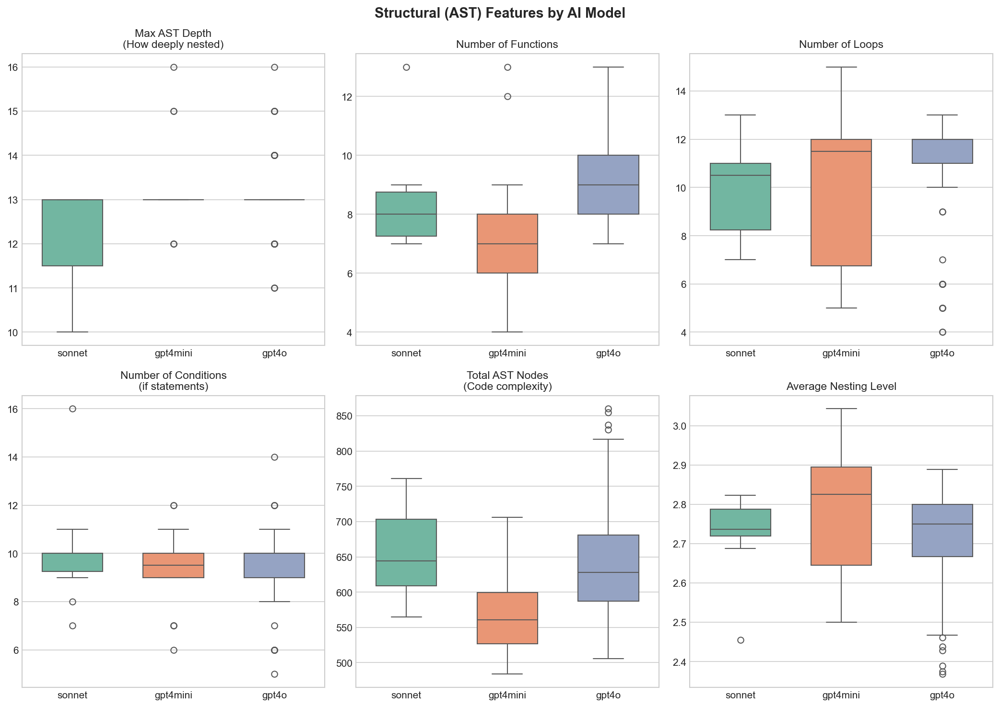
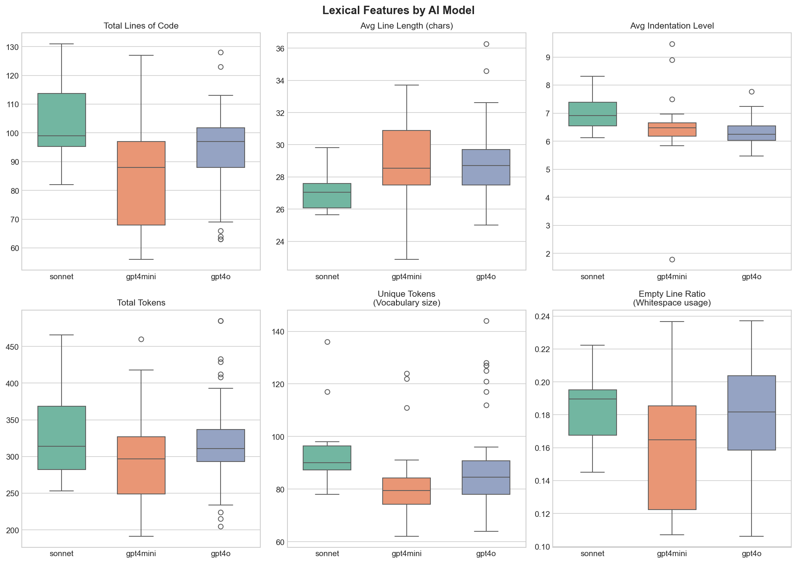
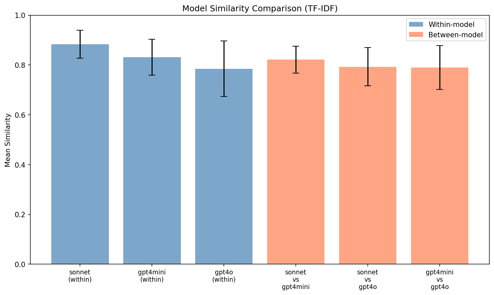
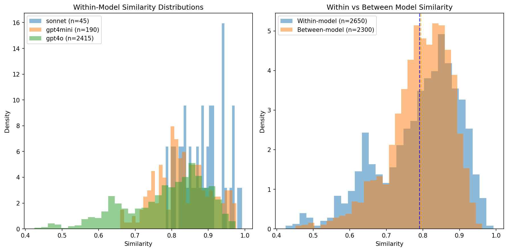
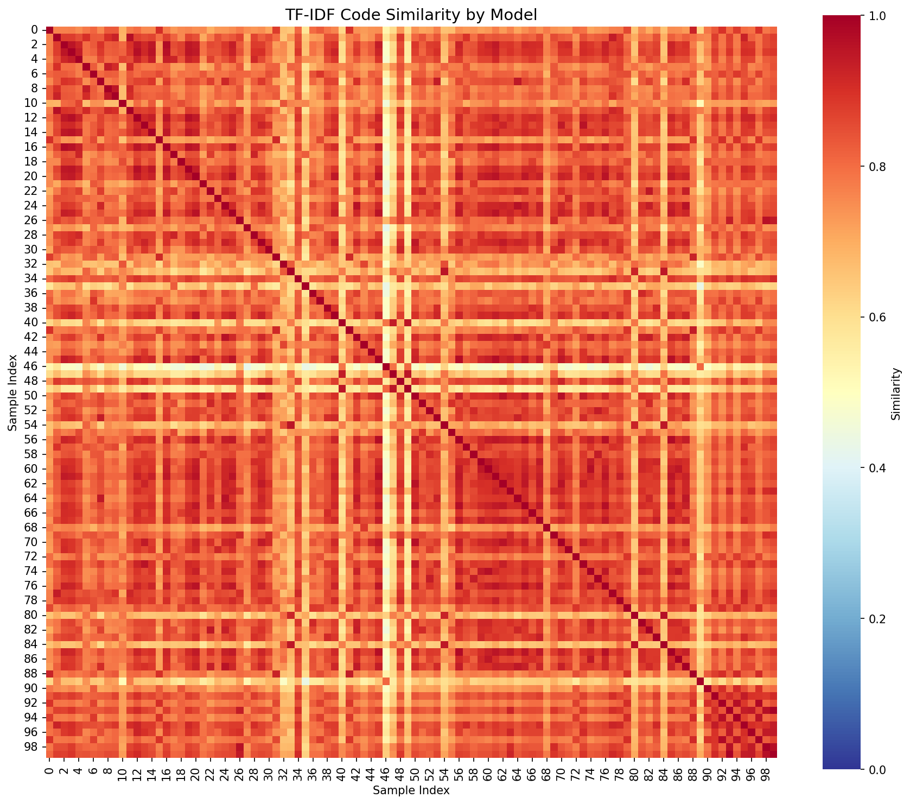
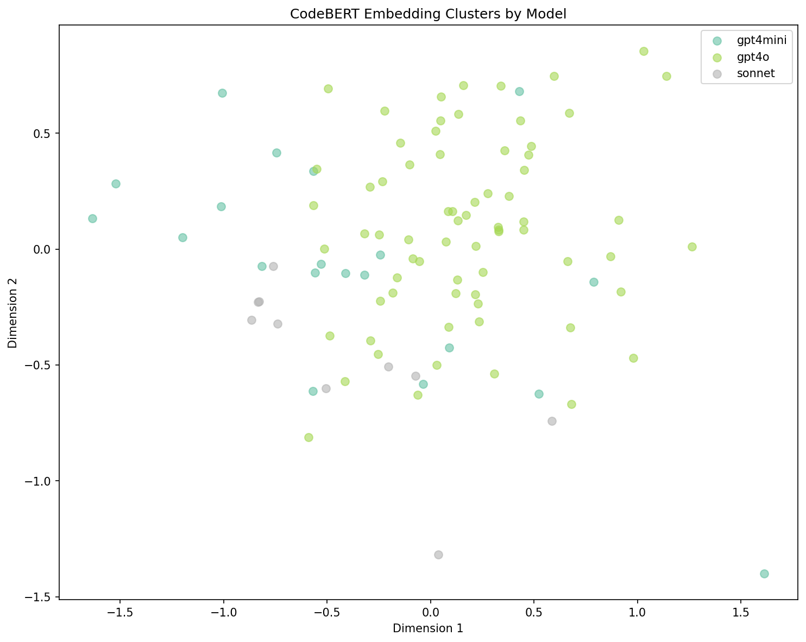
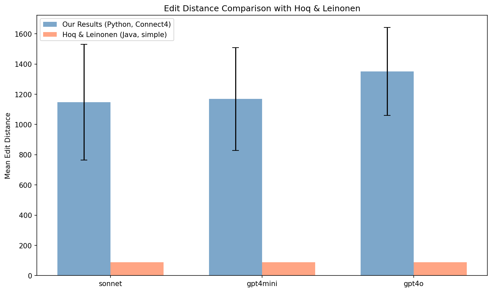

A Similarity-Based Approach for Intro CS Assignments
Senior Capstone Progress Report
Uditi Sharma
April 2026
Students are using AI tools like ChatGPT to write code for assignments.
Traditional plagiarism tools can't detect this because:
Even though each AI solution is unique, AI-generated code has hidden patterns or "fingerprints" that distinguish it from human-written code.
This is not a general-purpose AI detector. It only works for specific assignments where we have:
Generated 100 Connect4 solutions using AI:
Unlike prior research that only tested ChatGPT, we test multiple models to see if each has distinct "fingerprints."
Each solution uses different coding styles (beginner, compact, commented, etc.) to test if students can defeat detection by requesting specific styles.
We extract 1,390 total features from each code file:
| Feature Type | Count | What It Captures |
|---|---|---|
| Lexical | 553 | Surface patterns: TF-IDF, keywords, line metrics, naming conventions |
| Structural | 69 | Code structure: AST depth, function count, cyclomatic complexity |
| Semantic | 768 | Code meaning: CodeBERT embeddings (neural representation) |
CodeBERT is a pre-trained model that "understands" code. It converts each file into a 768-dimensional vector capturing semantic meaning. Two files that do similar things will have similar vectors, even if they look different.

AST = Abstract Syntax Tree - the structure of code independent of variable names.
Key Significant Differences:
Loop count and condition count don't differ significantly - all models use similar control flow patterns.

Surface-level code patterns - things you can see by looking at the code text.
Key Significant Differences:
Average line length is similar across models (~28-29 chars).
Different AI models produce code with statistically distinguishable patterns:
| Model | Within-Model Similarity | Interpretation |
|---|---|---|
| Claude (Sonnet) | 0.883 | Most consistent outputs |
| GPT-4o Mini | 0.831 | Moderate variation |
| GPT-4o | 0.785 | Most varied outputs |
Using semantic embeddings from CodeBERT:
Interpretation: At a semantic level, each model has a distinct "style" of solving problems that is statistically detectable.

Blue bars = Within-model similarity
(How similar is GPT-4o to other GPT-4o outputs?)
Orange bars = Between-model similarity
(How similar is GPT-4o to Claude outputs?)
Error bars = Standard deviation (spread)
Blue bars are taller than orange bars - code from the same model is more similar to itself than to other models. This is the "fingerprint" effect.

Blue (Sonnet): Tall narrow spike = very consistent outputs
Orange (GPT-4o Mini): Medium spread
Green (GPT-4o): Wide spread = most varied outputs
Blue: All same-model comparisons
Orange: All cross-model comparisons
Dashed line: The average (mean)
Blue is slightly right of orange = within > between

This is a 100 x 100 grid - every file compared to every other file.
Brighter (red/orange) = More similar (closer to 1.0)
Darker (blue) = Less similar (closer to 0.0)
The diagonal is always brightest (file compared to itself = 1.0).
The bright cross pattern shows that certain files are similar to many others across ALL models - likely "standard" solutions that all AI models converge on. The within > between effect is statistically real but subtle visually.

Each dot = one code file (100 total)
Colors: Green = GPT-4o, Orange = GPT-4o Mini, Blue = Sonnet
Axes: CodeBERT outputs 768 numbers per file. We used PCA to compress to 2 dimensions so we can plot it.
If models have different fingerprints, same-color dots should cluster together.
There's visible grouping (blue dots mostly upper area), but not perfect separation. Statistics are more sensitive than our eyes - they confirm the clustering is real.

The minimum number of character changes (insert, delete, replace) to transform one code file into another. Like spell-check distance for whole files.
Blue bars: Our results (Connect4, ~93 lines)
Orange bars: Hoq & Leinonen (simple 10-line Java)
Our edit distances are 10-15x larger (1,150-1,350 vs 88). This shows we're tackling much more complex, realistic code than prior research.
Building on Hoq & Leinonen (SIGCSE 2024): "Detecting ChatGPT-Generated Code Submissions"
| Aspect | Hoq & Leinonen | Our Project |
|---|---|---|
| AI Models Tested | ChatGPT only | 3 models (GPT-4o, Mini, Claude) |
| Programming Language | Java | Python |
| Code Complexity | ~10 lines | ~93 lines |
| Output Type | Binary yes/no | Probability scores |
| Semantic Analysis | No | CodeBERT embeddings |
| Edit Distance (avg) | 88 | 1,147-1,350 |
This is the first study to show that different AI models (not just ChatGPT) produce distinguishable code fingerprints, using semantic embeddings on complex assignments.
Waiting for pre-ChatGPT student submissions to test the main hypothesis: AI vs Human separation.
Questions that emerged from our analysis:
Thank you for your time
Project Repository: capstone/
Run Analysis: python run_analysis.py
Results: results/figures/ and results/analysis_report.txt